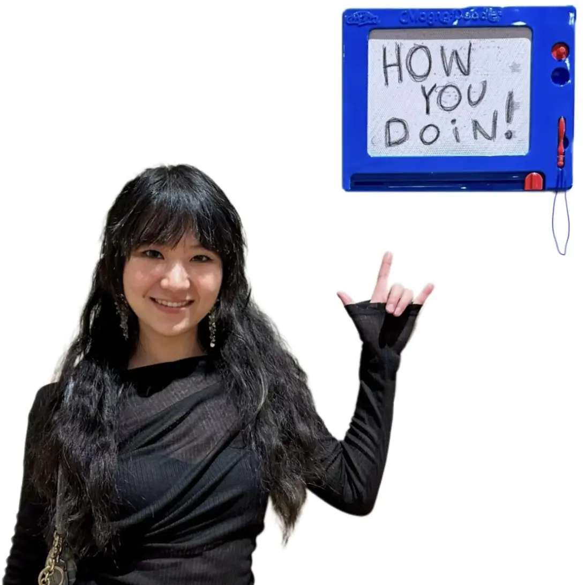

Wen Ying (应雯)
Ph.D. Candidate, University of Virginia
Email: wenying@virginia.edu
Office: Rice Hall 020/532
Biography
I am a fifth-year Ph.D. candidate in the Ultimate User Interface Lab at the University of Virginia,
advised by Prof. Seongkook Heo.
Previously, I worked with Prof. Mingli Song at Zhejiang University.
My research explores enhancing interactions in Virtual Reality (VR) by making them more
efficient and comfortable for creative and productive use. I also design and develop haptic devices
to enrich immersive and professional experiences across both virtual and physical environments.
[...]
I am actively seeking both internship and full-time opportunities, feel free to reach out!
Research
![[RedirectedPinch]](assets/RedirectedPinch/RedirectedPinch_Demo.webp)
@inproceedings{ying2026redirected,
author = {Ying, Wen and Kim, Yeonsu and Rahman, Adil and Hu, Erzhen and Lee, Geehyuk and Heo, Seongkook},
title = {Redirected Pinch: Efficient and Comfortable Bare-Hand Interaction for 2D Windows in VR},
year = {2026},
isbn = {9798400722783},
publisher = {Association for Computing Machinery},
address = {New York, NY, USA},
url = {https://doi.org/10.1145/3772318.3791512},
doi = {10.1145/3772318.3791512},
abstract = {Virtual Reality (VR) offers portable and flexible workspaces. However, enabling efficient and comfortable interactions without external input devices remains challenging. We propose leveraging redirected input to enable comfortable and touch-like interaction for quick and intuitive control. Our design study revealed that while touch interaction performs well with direct input, its performance degrades significantly under input redirection. In contrast, using pinch improves redirected input by providing self-haptic feedback and reducing input dimensionality, thereby compensating for spatial discrepancies. Based on these findings, we introduce Redirected Pinch, a bare-hand interaction technique that combines input redirection with pinch confirmation. It creates a virtual plane at waist height, remapping hand movements on the plane to a vertical window, with pinch gestures used for confirmation. A user study demonstrated that Redirected Pinch achieves a strong balance of accuracy, efficiency, comfort, and sense of agency across fundamental interactions.},
booktitle = {Proceedings of the 2026 CHI Conference on Human Factors in Computing Systems},
articleno = {1686},
numpages = {18},
keywords = {gestures, bare-hand interaction, input remapping, virtual reality},
location = {
},
series = {CHI '26}
}
![[Interreality]](assets/Interreality/Interreality_Demo.webp)
@inproceedings{rahman2026feels,
author = {Rahman, Adil and Ying, Wen and Azim, Md Aashikur Rahman and Annett, Michelle and Heo, Seongkook},
title = {"It Feels Like I am Invited to Communicate": Mediating Ad-Hoc Bystander-VR User Interruptions Through Proactive Proxies},
year = {2026},
isbn = {9798400722783},
publisher = {Association for Computing Machinery},
address = {New York, NY, USA},
url = {https://doi.org/10.1145/3772318.3791936},
doi = {10.1145/3772318.3791936},
abstract = {As VR expands into public spaces, new challenges emerge around spontaneous interactions between bystanders and unfamiliar VR users. While current VR systems often prioritize user awareness of their physical surroundings, they overlook the social dynamics affecting nearby bystanders. We conducted a deception-based study (N=80) examining how interface availability influences bystanders’ comfort, confidence, and hesitation when interrupting VR users. We compared traditional static interruption interfaces (e.g., button on screen) with a proactive proxy that actively approached bystanders upon detecting interruption intent. Static interfaces, due to insufficient cueing, frequently caused bystander discomfort, leading to hesitant physical interruptions or complete communication avoidance. In contrast, the proactive proxy implicitly conveyed social permission, significantly enhancing bystanders’ comfort and confidence. Our findings provide empirical insights into how bystanders assess availability and initiate interruptions with unfamiliar VR users in shared spaces, offering design implications for VR systems that support bystander agency and comfort during these interactions.},
booktitle = {Proceedings of the 2026 CHI Conference on Human Factors in Computing Systems},
articleno = {1655},
numpages = {20},
keywords = {Virtual Reality; Bystander-VR User Interaction; Interruptions; Interruption Interface; Proactive Proxy},
location = {
},
series = {CHI '26}
}
Best Paper Honorable Mention
@inproceedings{10.1145/3641825.3687714,
author = {Ying, Wen and Heo, Seongkook},
title = {Enhancing VR Sketching with a Dynamic Shape Display},
year = {2024},
isbn = {9798400705359},
publisher = {Association for Computing Machinery},
address = {New York, NY, USA},
url = {https://doi.org/10.1145/3641825.3687714},
doi = {10.1145/3641825.3687714},
abstract = {Sketching on virtual objects in Virtual Reality (VR) can be challenging due to the lack of a physical surface that constrains the movement and provides haptic feedback for contact and movement. While using a flat physical drawing surface has been proposed, it creates a significant discrepancy between the physical and virtual surfaces when sketching on non-planar virtual objects. We propose using a dynamic shape display that physically mimics the shape of a virtual surface, allowing users to sketch on a virtual surface as if they are sketching on a physical object’s surface. We demonstrate this using VRScroll, a shape-changing device that features seven independently controlled flaps to imitate the shape of a virtual surface automatically. Our user study showed that participants exhibited higher precision when tracing simple shapes with the dynamic shape display and produced clearer sketches. We also provided several design implications for dynamic shape displays aimed at enabling precise sketching in VR.},
booktitle = {Proceedings of the 30th ACM Symposium on Virtual Reality Software and Technology},
articleno = {22},
numpages = {11},
keywords = {dynamic shape display, on-surface interactions, virtual reality},
location = {Trier, Germany},
series = {VRST '24}
}
@inproceedings{10.1145/3613905.3648662,
author = {Ying, Wen and Rahman, Adil and Heo, Seongkook},
title = {Demonstrating VRScroll: A Shape-Changing Device for Precise Sketching in Virtual Reality},
year = {2024},
isbn = {9798400703317},
publisher = {Association for Computing Machinery},
address = {New York, NY, USA},
url = {https://doi.org/10.1145/3613905.3648662},
doi = {10.1145/3613905.3648662},
abstract = {Sketching precisely in Virtual Reality (VR) is challenging due to the lack of a physical surface for users to lean on, feel the contact and the movement of the pen, and constrain the pen movement. Using physical surface interfaces, such as a touch tablet, can improve sketching performance; however, they cannot replicate the diverse shapes of virtual objects. We present VRScroll, a novel shape-changing device equipped with a dynamic drawing surface to support high-precision sketching in VR. The device has seven motor-controlled flaps that can independently change the angles between them in real time to mimic the surface shape of a virtual object. Since the degree of freedom and resolution of VRScroll is limited, it cannot replicate the surface geometry of diverse types of virtual objects. To allow the device to closely mimic the shape of the virtual surface, we developed a shape approximation algorithm.},
booktitle = {Extended Abstracts of the 2024 CHI Conference on Human Factors in Computing Systems},
articleno = {398},
numpages = {5},
keywords = {dynamic shape display, shape approximation, sketching, virtual reality},
location = {
},
series = {CHI EA '24}
}
@article{10.1145/3698113,
author = {Zhang, Peiyu and Ying, Wen and Riggs, Sara L and Heo, Seongkook},
title = {Moir\'{e}Tag: A Low-Cost Tag for High-Precision Tangible Interactions without Active Components},
year = {2024},
issue_date = {December 2024},
publisher = {Association for Computing Machinery},
address = {New York, NY, USA},
volume = {8},
number = {ISS},
url = {https://doi.org/10.1145/3698113},
doi = {10.1145/3698113},
abstract = {In this paper, we present Moir\'{e}Tag—a novel tag-like device that magnifies displacement without active components for indirect sensing of subtle tangible interactions. The device consists of two overlapping layers of stripe patterns with distinct pattern frequencies. These layers create Moir\'{e} fringes that can move faster than the actual movement of a layer. Using a customized image processing pipeline, we show that Moir\'{e}Tag can reliably detect sub-mm movement in real-time (mean error = 0.043 mm) under varying lighting conditions, camera angles, and camera distances. We also demonstrate five applications of Moir\'{e}Tag to showcase its potential as a low-cost solution to capture and monitor small changes in movement and other physical properties, such as force and volume, by converting them into displacement.},
journal = {Proc. ACM Hum.-Comput. Interact.},
month = oct,
articleno = {525},
numpages = {19},
keywords = {Moir\'{e} pattern, displacement magnification, force sensing, force visualization, tangible interface, wearable sensor}
}
@INPROCEEDINGS{10160313,
author={Hildebrandt, Carl and Ying, Wen and Heo, Seongkook and Elbaum, Sebastian},
booktitle={2023 IEEE International Conference on Robotics and Automation (ICRA)},
title={Mimicking Real Forces on a Drone Through a Haptic Suit to Enable Cost-Effective Validation},
year={2023},
volume={},
number={},
pages={10518-10524},
keywords={Propellers;Shape;Wind tunnels;Synthesizers;Transforms;Haptic interfaces;Behavioral sciences},
doi={10.1109/ICRA48891.2023.10160313}
}
@INPROCEEDINGS{10108764,
author={Ying, Wen and Heo, Seongkook},
booktitle={2023 IEEE Conference on Virtual Reality and 3D User Interfaces Abstracts and Workshops (VRW)},
title={VRScroll: A Shape-Changing Device for Precise Sketching in Virtual Reality},
year={2023},
volume={},
number={},
pages={815-816},
keywords={Performance evaluation;Solid modeling;Three-dimensional displays;Shape;Conferences;Virtual reality;User interfaces;Human-centered computing-Human computer interaction (HCI)-Interaction devices-Haptic devices},
doi={10.1109/VRW58643.2023.00250}
}
@inproceedings{10.1145/3526114.3558706,
author = {Zhang, Peiyu and Ying, Wen and Heo, Seongkook},
title = {Fringer: A Finger-Worn Passive Device Enabling Computer Vision Based Force Sensing Using Moir\'{e} Fringes},
year = {2022},
isbn = {9781450393218},
publisher = {Association for Computing Machinery},
address = {New York, NY, USA},
url = {https://doi.org/10.1145/3526114.3558706},
doi = {10.1145/3526114.3558706},
abstract = {Despite the importance of utilizing forces when interacting with objects, sensing force interactions without active force sensors is challenging. We introduce Fringer, a finger sleeve that physically visualizes the force to allow a camera to estimate the force without using any active sensors. The sleeve has stripe-pattern slits, a sliding paper with stripe pattern, and a compliant layer that converts force into sliding paper movements. The patterns of the slit and the paper have different frequencies to create Moir\'{e} fringes, which can magnify the small displacement caused by the compliant layer compression for webcams to easily capture such displacement.},
booktitle = {Adjunct Proceedings of the 35th Annual ACM Symposium on User Interface Software and Technology},
articleno = {20},
numpages = {3},
keywords = {Moir\'{e} patterns, force sensing, force visualization, wearable sensor},
location = {Bend, OR, USA},
series = {UIST '22 Adjunct}
}
Education
Ph.D. in Computer Science
Sep. 2020 - Present
M.S. in Computer Science
Aug. 2018 - Jul. 2020
Charlottesville, VA
Experience
Research Assistant | With Prof. Seongkook Heo
Sep. 2020 - present
Charlottesville, VA
Teaching Assistant | Human Computer Interaction (CS 6501)
Teaching Assistant | Engineering Interactive Technologies (CS 4501/6501)
Aug. 2021 - Dec. 2023
Charlottesville, VA